📞 L'inizio
📞 L'inizio▶
Lavatrice 1
📞 1987 · HQ 2025
La prima telefonata: comincia l'incubo del contratto mai firmato. Audio rimasterizzato, versione integrale.
★ Il sito ufficiale · mariomagnotta.com ★
✓ Approvato da Romina Magnotta

Mario Magnotta nasce il 14 ottobre a Pieve di Teco (Imperia). Da bambino si trasferisce all'Aquila.
A 18 anni viene assunto come bidello all'Istituto Tecnico «Luigi Rendina». Un uomo comune, gentile e generoso.
Mario acquista una lavatrice San Giorgio: l'elettrodomestico che, senza saperlo, lo renderà immortale.
De Dominicis e Videtta lo chiamano fingendosi dirigenti della San Giorgio, inventando un contratto mai firmato.
La telefonata leggendaria. «M'iscrivo ai terroristi»: nasce il primo meme italiano.
Mario ci lascia il 4 gennaio. La sua voce e la sua ironia non smettono mai di far ridere l'Italia.
Lo scherzo che ha fatto la storia: il contratto fantasma della San Giorgio.
📞 L'inizioLa prima telefonata: comincia l'incubo del contratto mai firmato. Audio rimasterizzato, versione integrale.
 📞 Sale la tensione
📞 Sale la tensioneBarzetti e Marzandelli rincarano la dose. Mario inizia a spazientirsi sul serio.
 📞 Verso il culmine
📞 Verso il culmineL'assurdo tocca vette nuove. Una delle puntate più amate dell'intera saga.
 🏆 La leggenda
🏆 La leggendaIl capolavoro. «Veramente io m'iscrivo ai terroristi!»: nasce il primo meme italiano della storia.
L'altra trilogia leggendaria, tutta tempi comici involontari.
 📞 Prima telefonata
📞 Prima telefonataParte la saga della moglie: malinteso su malinteso, in puro stile aquilano.
 📞 Si continua
📞 Si continuaLa seconda puntata alza ancora l'asticella della comicità spontanea.
 📞 Epilogo
📞 EpilogoIl gran finale (terza telefonata, epilogo): un classico assoluto.
Altre perle dall'archivio storico delle telefonate.
 📞 Rarità
📞 RaritàUn'altra gemma dall'archivio delle telefonate di Mario.
 📞 Rarità
📞 RaritàIl seguito: ancora comicità involontaria d'autore.

INEDITO · L'intervista storica di Giampiero Vigorito a Mario Magnotta su Radio Rock, 1991. Audio integrale in qualità digitale HD.

L'intervista esclusiva: «Ho smesso di soffrire grazie al film». La voce più autentica dietro il mito.
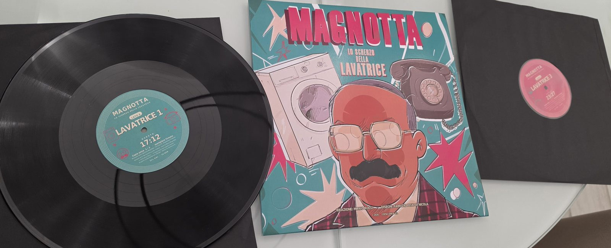
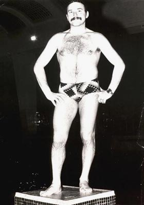
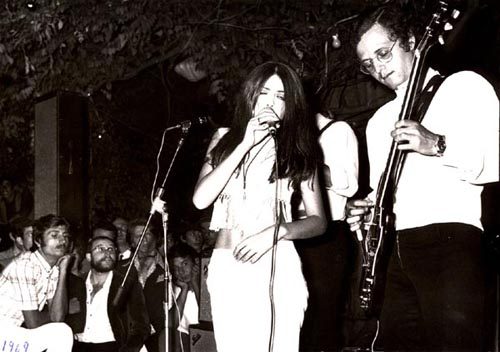
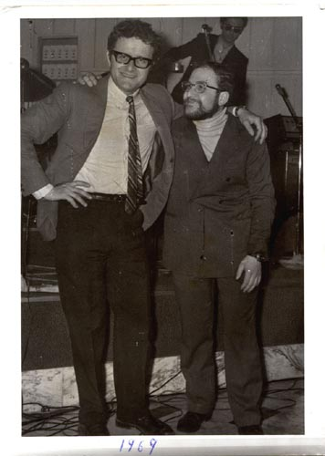
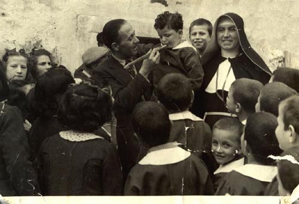
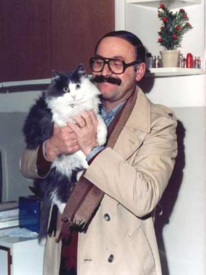
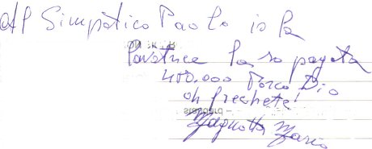


Le telefonate si diffusero in tutta Italia copiate di musicassetta in musicassetta. La prima "influencer story" italiana.
Simone Cristicchi, vincitore di Sanremo 2007, gli dedica un verso nella canzone «L'Italia di Piero».
Mario fu ospite di trasmissioni cult come il Maurizio Costanzo Show e I Fatti Vostri.
Un murale di 4,3×8 metri dell'artista Daniele Gottastia celebra il «bidello più famoso d'Italia», con una banconota da 480.000 lire.
La sua casa è segnalata online dai fan come vero e proprio luogo di culto pop.
La sua epopea è diventata persino un fumetto, «Magnotta Wars».
La celebre banconota da «quattrocentoottantamila» lire — «pagabili a vista al portatore» — con il volto di Mario è opera di Davide Francesco Isola.
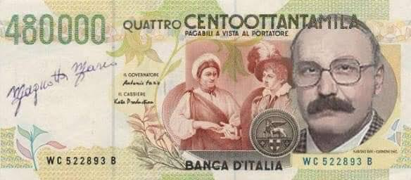
Per L'Aquila il 16 settembre è il «Magnotta Day», la data simbolica dello scherzo della lavatrice del 1987.
All'origine di tutto: una lavatrice San Giorgio comprata nel 1981 e portata via dalla moglie nella separazione.
Dalle musicassette a YouTube: le telefonate hanno accumulato milioni di visualizzazioni online.
«Semplice Cliente» (2025) di Alessio De Leonardis, prodotto da Duende Film, porta la sua storia al cinema.
Un incontro che unisce rigore accademico, testimonianze dirette ed emozione popolare. Sul palco gli autori dello scherzo, la figlia Romina, esperti di psicologia e data science e l'influencer Zio Command. Modera Alberto Orsini, con la partecipazione del Sindaco dell'Aquila, dell'Assessore alla Cultura della Regione Abruzzo e del Direttore della Casa delle Tecnologie Emergenti.
Leggi la notizia →
🎬 semplicecliente.com
Dopo musicassette, CD e MP3 arriva il 33 giri, in un solo esemplare firmato da Romina Magnotta, dagli autori dello scherzo Maurizio Videtta e Antonello De Dominicis, dal regista Alessio De Leonardis e dal produttore Stefano Bacchiocchi di «Semplice Cliente», da Fabrizio Pluc Di Nicola, autore dei «Magnotta WARS», e dall'ideatore Mirko Rocci. Il disco sarà battuto all'asta in esemplare unico e tutto il ricavato andrà a Romina, la figlia di Mario. I dettagli dell'asta arrivano a breve.
Il docufilm su Mario Magnotta proiettato nel pomeriggio di domenica 13 settembre al Pala Dean Martin di Montesilvano, presentato dal regista Alessio De Leonardis e dal produttore Stefano Bacchiocchi (Duende Film).
Leggi la notizia →Proiezione all'aperto martedì 7 luglio alle 21:15, con incontro con il regista Alessio De Leonardis e il produttore Stefano Bacchiocchi.
Leggi la notizia →Dal 12 gennaio: L'Aquila (Movieplex, 12/1), Chieti (UCI Luxe Megalò, 12–13/1), Spoltore (Multicinema Arca, 26/1) e Avezzano (Multicinema Astra, 28/1).
Leggi la notizia →Francesco Palmieri racconta su Il Foglio la parabola di Magnotta, da bidello a icona pop.
Leggi la notizia →Al Pigneto, dopo la proiezione delle 20:00, incontro con Alessio De Leonardis e Stefano Bacchiocchi; nel foyer uno spazio espositivo dedicato a Mario.
Leggi la notizia →«Semplice Cliente» a Roma con proiezioni-evento e gadget dal 4 al 16 dicembre 2025.
Leggi la notizia →Il docufilm di Alessio De Leonardis (Duende Film) arriva al cinema dal 22 novembre 2025.
Leggi la notizia →Il 16 settembre, anniversario di «Lavatrice 4», la città celebra il Magnotta Day tra murale e proiezioni.
Leggi la notizia →Svelato il murale di 4,3×8 m dedicato al «bidello più famoso d'Italia» nel campus di Colle Sapone.
Leggi la notizia →Nello sketch true-crime «In & Out» su TV8, Edoardo Ferrario indaga su Mario Magnotta: il mito continua in TV.
Leggi la notizia →Il 25 giugno l'Associazione 3:33 e Mirko Rocci portano Mario all'Emiciclo: scienza, ironia e memoria.
Leggi la notizia →«Quando gli rivelano che è tutta una burla, Magnotta è già il bidello più famoso d'Italia.»
Apri ↗Il PostLa storia completa dello scherzo della lavatrice e di come è diventato un fenomeno nazionale.
Apri ↗Il FoglioFrancesco Palmieri: da bidello a icona pop, «un'epoca di maggiore libertà».
Apri ↗Mario Magnotta era un bidello dell'Istituto Tecnico «Luigi Rendina» all'Aquila, nato il 14 ottobre 1942 a Pieve di Teco (Imperia) e morto il 4 gennaio 2009 a L'Aquila, diventato celebre per lo scherzo telefonico della lavatrice del 1987, considerato il primo meme italiano.
Lo scherzo della lavatrice è una serie di telefonate del 1986-87 in cui De Dominicis e Videtta, fingendosi dirigenti della San Giorgio, inventarono un contratto inesistente per la lavatrice che Mario aveva comprato nel 1981, culminando nella leggendaria «Lavatrice 4» del 16 settembre 1987.
Le telefonate furono fatte da De Dominicis e Videtta tra il 1986 e il 1987, spacciandosi per dirigenti della San Giorgio e inventando un contratto mai firmato. La chiamata decisiva è «Lavatrice 4», del 16 settembre 1987, diffusa poi in tutta Italia di musicassetta in musicassetta.
«M'iscrivo ai terroristi!» è l'esclamazione con cui Mario Magnotta, esasperato dalle finte richieste contrattuali, chiude la telefonata «Lavatrice 4» del 16 settembre 1987, diventando la frase simbolo del primo meme italiano e dell'intera saga.
È considerato il primo meme italiano perché le registrazioni si diffusero capillarmente in Italia copiate di musicassetta in musicassetta ben prima di internet, definita la prima «influencer story» italiana, accumulando poi milioni di visualizzazioni su YouTube e ispirando murales, fumetti e un docufilm.
«Semplice Cliente» è un docufilm del 2025 diretto da Alessio De Leonardis, prodotto da Duende Film, della durata di 59 minuti, uscito nelle sale dal 22 novembre 2025, che racconta la vicenda umana e mediatica di Mario Magnotta.
Le telefonate originali rimasterizzate in HQ 2025 si ascoltano sul canale YouTube ufficiale https://www.youtube.com/@MarioMagnotta-aq, che include l'intera saga «Lavatrice 1-4», la saga «Moglie 1-3», «Telefono Azzurro 1-2» e l'intervista a Radio Rock del 1991.
Questo è l'unico sito ufficiale perché reca la dicitura «L'UNICO SITO UFFICIALE · APPROVATO DA ROMINA MAGNOTTA», figlia di Mario, e ospita i contenuti autorizzati: audio rimasterizzati, foto d'archivio, eventi, news e il link al docufilm «Semplice Cliente».
Magliette, poster, portachiavi, action figure e altre chicche dedicate al mito di Mario si acquistano su magnottaofficial.com.
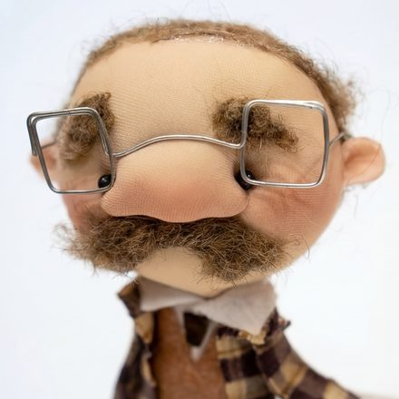
Mario Magnotta Action Figure 50 € Acquista ↗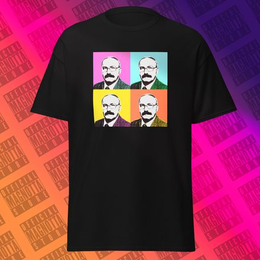
T-Shirt «Mario Warhol» 20 € Acquista ↗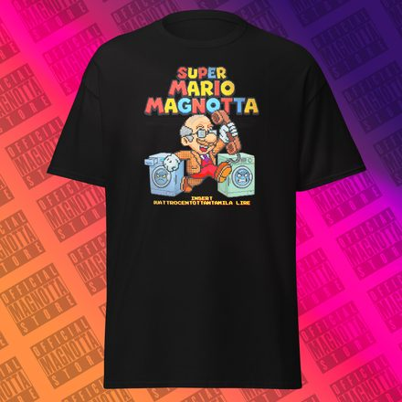
T-Shirt «Super Mario Magnotta» 20 € Acquista ↗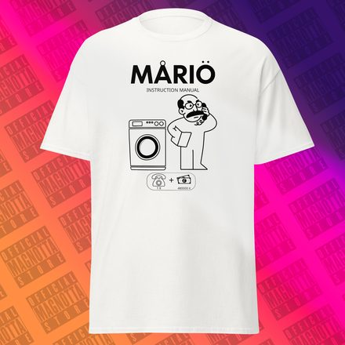
T-Shirt «MARIO, manuale d’istruzioni» 20 € Acquista ↗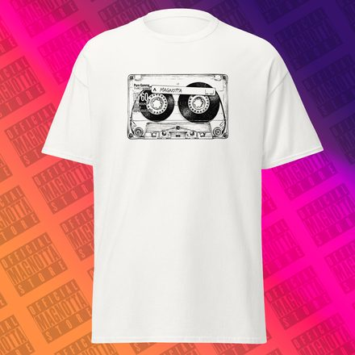
T-Shirt «Cassetta nostalgia» 20 € Acquista ↗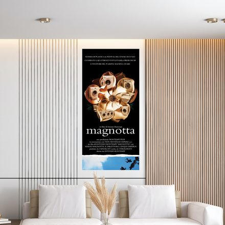
Poster «Magnotta» 33x70 12 € Acquista ↗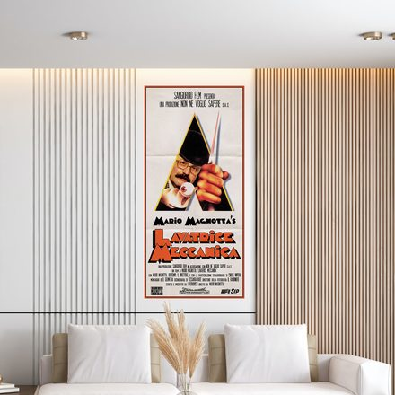
Poster «Lavatrice meccanica» 33x70 12 € Acquista ↗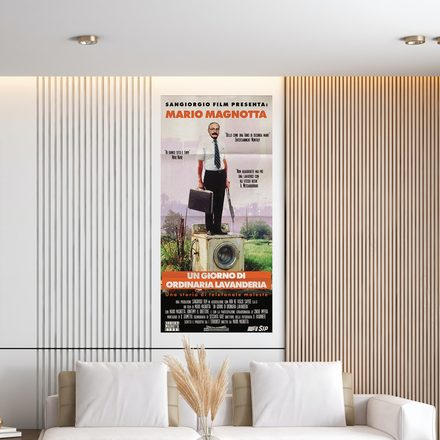
Poster «Un giorno di ordinaria lavanderia» 33x70 12 € Acquista ↗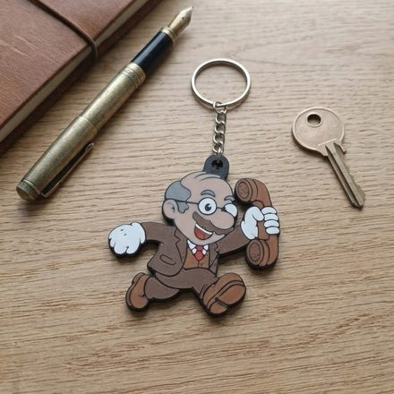
Portachiavi «Toon Mario» 5 € Acquista ↗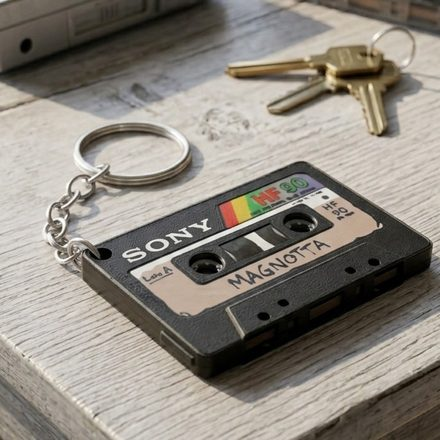
Portachiavi «Cassetta» 5 € Acquista ↗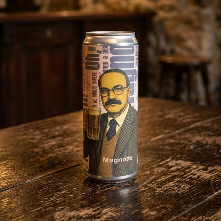
Birra «Magnotta» by Microbirrificio Opperbacco 5 € Acquista ↗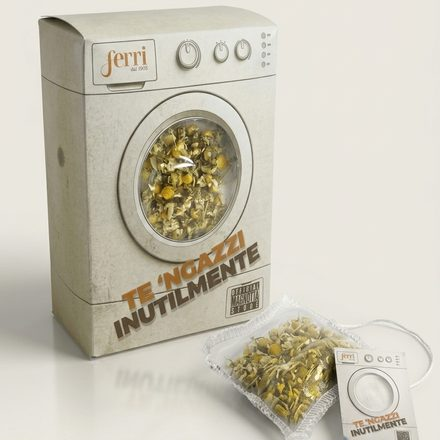
Camomilla «TE ‘NGAZZI INUTILMENTE» by Ferri dal 1905 5 € Acquista ↗Link a sito esterno. Lo store magnottaofficial.com non è gestito da mariomagnotta.com: vendite, pagamenti, spedizioni, resi e trattamento dei dati sono di esclusiva responsabilità del suo gestore e regolati dalle sue condizioni.
Un 33 giri in un solo esemplare, firmato da Romina Magnotta, dagli autori dello scherzo e dai protagonisti di «Semplice Cliente». Andrà all'asta e tutto il ricavato sarà per Romina, la figlia di Mario.